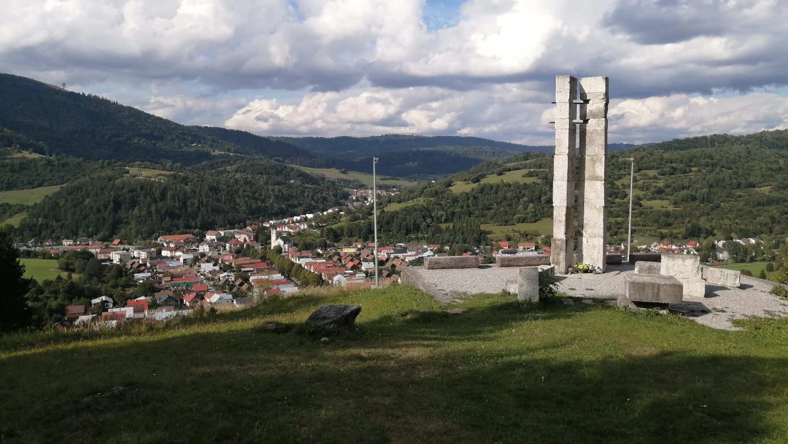
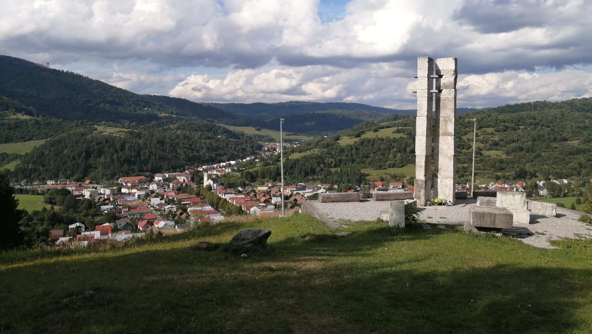
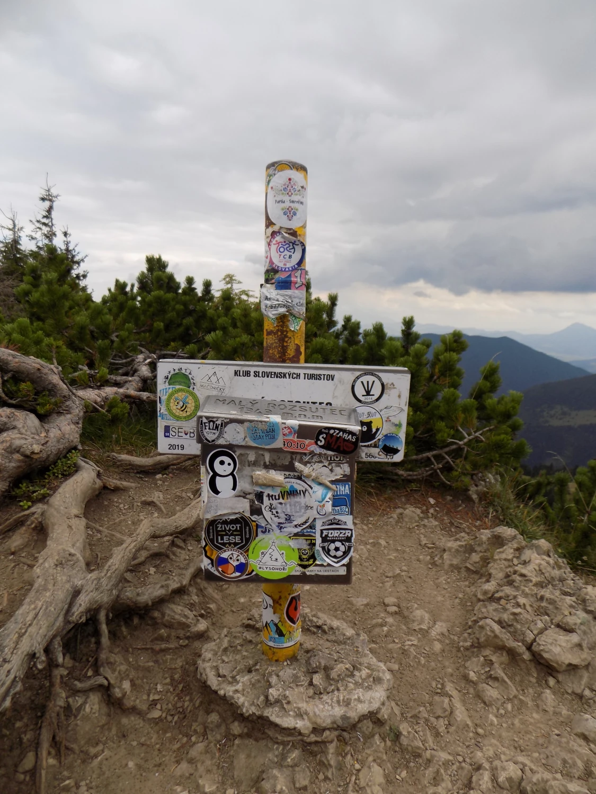
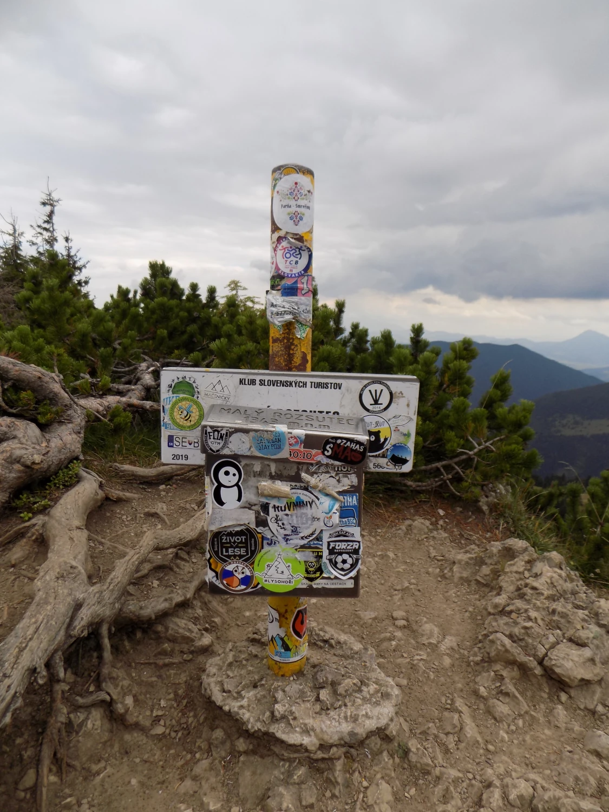

Hory, které se ti dostanou pod kůži
Štrské pleso, Jánosíkové diery, Malá Fatra, Vysoké Tatry, Tatranská Lomnica, Banská Bystrica

Tour de Slovensko byla dechberoucí návštěva této nádherné oblasti. Začaly jsme ve městě Terchová, kde jsme měly ubytování přímo ve městě a odkud jsme vyrážely na výlety do Jánošíkových dier i na Malý Rozsutec (1 344 m n. m.). Čekala nás úžasná soutěska, kde se šplhá pomocí řetězů, lan a žebříků a kde má člověk pocit opravdového dobrodružství.
Další zastávkou bylo Štrbské Pleso, kde jsme se jen krátce prošly kolem jezera, a pak jsme pokračovaly do Tatranské Lomnice. Odtud jsme vyjely lanovkou na Lomnický štít (2 634 m n. m.), odkud jsme bohužel kvůli husté mlze skoro nic neviděly. I tak to ale byl silný zážitek. Ve městě jsme také navštívily opuštěné urbexové budovy a starý skokanský můstek.
Na závěr jsme se přesunuly do Banské Bystrice na setkání geocacherů a kde jsme na baráku zabíjely obřího pavouka pomocí lopatky, kterou jsem nakonec ještě paní domácí rozbily.
Kouzlo slovenských velehor
Slovensko je středoevropská země ležící mezi Českou republikou, Polskem, Maďarskem, Rakouskem a Ukrajinou. Má přibližně 5,4 milionu obyvatel a hlavním městem je Bratislava. Země je známá svou rozmanitou přírodou – najdeme zde vysoké hory, hluboké lesy, termální prameny i historická města a hrady.
Velkou část území tvoří pohoří Karpaty, včetně Vysokých Tater, které jsou nejvyššími horami země. Slovensko má bohatou lidovou kulturu, tradiční hudbu, kroje i kuchyni, která je blízká té české, ale přesto má své vlastní speciality.
Ekonomika Slovenska je založená hlavně na průmyslu, zejména automobilovém, a na službách. Země je členem Evropské unie i eurozóny, platí se zde eurem.
Slovensko je oblíbené mezi turisty díky své dostupnosti, krásné přírodě, termálním lázním a množství turistických i cyklistických tras. Je to ideální destinace pro milovníky hor, historie i klidné dovolené v přírodě.
Galerie
 


 
